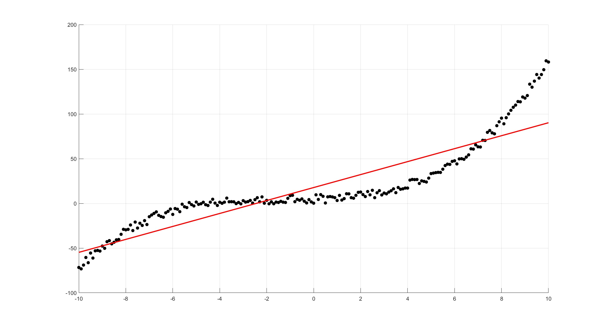

Appendix H — Data Fitting
H.1 Linear Regression
Linear Regression, or Linear Least Squares (LS), problems originally arose from the need to fit a mathematical model to given observations; typically, to reduce the influence of errors in the observations. It is desirable to use a greater number of measurements than the number of unknown parameters in the model (more equations than unknowns), hence leading to an overdetermined system of equations. In other words, given \(\boldsymbol{b} \in \mathbb{R}^M\) and \(A \in \mathbb{R}^{M\times N}\) with \(M>N\), a solution \(\boldsymbol{x} \in \mathbb{R}^N\) needs to be found such that \(A \boldsymbol{x}\) is the ``best’’ approximation to \(\boldsymbol{b}\).
For instance, consider a set of \(M\) data points (or measurements) \((t_i,y_i)\) for \(i=1,2,\dots,M\). The idea behind linear regression is to find a parameter vector \(\boldsymbol{x} \in \mathbb{R}^N\) such that the linear function \(y\) given by \[y(t)=f(x,t)=\sum_{j=1}^N{x_j\varphi_j(t)}\] can approximate the data in the best possible way, by reducing the error between the measurement \((t_i,y_i)\) and the approximation \((t_i,y(t_i))\).
There are \(M\) equations represented by the \(M\) measurements and \(N\) unknowns, which are the terms of \(\boldsymbol{x}\). Replacing the measurements into the equation for \(y\) gives an overdetermined system \[y_i=\sum_{j=1}^N x_j\varphi_j(t_i) \quad \text{for} \quad i=1,\dots,M.\] This system can be written in matrix form as \(A\boldsymbol{x}=\boldsymbol{b}\) where the elements of \(A\) are \(a_{ij}=\varphi_j(t_i)\) and the elements of \(\boldsymbol{b}\) are \(b_i=y_i\). The ``best’’ way to fit the data can be different depending upon the discipline, but the one of the simplest and most statistically motivated choice is to find a vector \(\boldsymbol{x}\) where the square of the distance between the points is reduced as much as possible, i.e. reduce the value of \((y(t_i)-y_i)^2\). More formally, this can be written as a minimisation problem to find \[\min_{\boldsymbol{x}}\| \boldsymbol{r} \|_2 \quad \text{where} \quad \boldsymbol{r}=\boldsymbol{b}-A\boldsymbol{x} \quad \text{is the residual}\] and the linear least squares solution is \[\tilde{x}=\underset{\boldsymbol{x}}{\mathrm{argmin}}\|A\boldsymbol{x}-\boldsymbol{b}\|_2.\] Sometimes the solution \(\boldsymbol{x}\) may not be unique (if the rank of \(A\) is less than \(N\)), in that case, the solution will be the one with the smallest 2-norm.
Hooke’s law states that the length \(l\) of an extension of a spring is directly proportional to the force \(F\) applied, specifically the extension can be written in terms of the force as \(l=e + k F\) where \(e\) is the equilibrium position and \(k\) is the spring stiffness, both of which are constants to be determined. Assume that an experiment was conducted and the following data was obtained
| \(F\) | 1 | 2 | 3 | 4 | 5 |
|---|---|---|---|---|---|
| \(l\) | 7.97 | 10.2 | 14.2 | 16.0 | 21.2 |
Therefore, a system of 5 equations in 2 unknowns is \[\begin{align*} 7.97 & = e + k \\ 10.2 & = e + 2k \\ 14.2 & = e + 3k \\ 16.0 & = e + 4k \\ 21.2 & = e + 5k. \\ \end{align*}\] This system can be written in matrix form as \[\begin{pmatrix} 1 & 1 \\ 1 & 2 \\ 1 & 3 \\ 1 & 4 \\ 1 & 5 \end{pmatrix}\begin{pmatrix} e \\ k \end{pmatrix}=\begin{pmatrix} 7.97 \\ 10.2 \\ 14.2 \\ 16.0 \\ 21.2 \end{pmatrix}.\]
This is an example of ***Inverse Problem} in which the parameters need to be found from the given data.
This minimisation problem can also be solved using the QR decomposition of the matrix \(A\). Suppose that the matrix \(A\) can be written as \(A=QR\) where \(Q\) is an orthogonal matrix and \(R\) is upper triangular, then \[\begin{align*} A\boldsymbol{x}-\boldsymbol{b} &= QR\boldsymbol{x} -\boldsymbol{b} \qquad \text{since $A=QR$} & = Q(R\boldsymbol{x}-{Q}^{\mathrm{T}}\boldsymbol{b}) \qquad \text{since $Q^{-1}={Q}^{\mathrm{T}}$}. \end{align*}\] Thus the 2-norm of the residual \(\boldsymbol{r}=A\boldsymbol{x}-\boldsymbol{b}\) is \[\begin{align*} \| \boldsymbol{r} \|_2 &= \| A\boldsymbol{x} - \boldsymbol{b} \|_2 \\ &= \| Q(R\boldsymbol{x}- {Q}^{\mathrm{T}}\boldsymbol{b}) \|_2 \\ &= \| R\boldsymbol{x} - {Q}^{\mathrm{T}}\boldsymbol{b} \|_2 \qquad \text{since $Q$ is orthogonal, then $\| Q\boldsymbol{v} \|_2=\| \boldsymbol{v} \|_2.$} \end{align*}\] As already noted, in many problems of estimating \(N\) parameters in a process with \(M\) experimental data points, the number of observations is usually larger than the number of parameters, i.e. \(M \geq N\). The problem of minimising \(\| R \boldsymbol{x} - {Q}^{\mathrm{T}} \boldsymbol{b} \|_2\) may be solved directly as follows: let \(\boldsymbol{c}={Q}^{\mathrm{T}}\boldsymbol{b}\), so that \[ R\boldsymbol{x} - {Q}^{\mathrm{T}}\boldsymbol{b} = R\boldsymbol{x}-\boldsymbol{c} = \begin{pmatrix} r_{11} & r_{12} & \dots & r_{1N} \\ 0 & r_{22} & \dots & r_{2N} \\ \vdots & \vdots & \ddots & \vdots \\ 0 & 0 & \dots & r_{NN} \\ 0 & 0 & \dots & 0 \\ \vdots & \vdots & \ddots & \vdots \\ 0 & 0 & \dots & 0 \end{pmatrix} \begin{pmatrix} x_1 \\ x_2 \\ \vdots \\ x_N \end{pmatrix}-\begin{pmatrix} c_1 \\ c_2 \\ \vdots \\ c_N \\ c_{N+1}\\ \vdots \\ c_M \end{pmatrix}=\begin{pmatrix} r_{11}x_1+r_{12}x_2+\dots+r_{1N}x_N-c_1 \\ r_{22}x_2+\dots+r_{2N}x_N-c_2 \\ \vdots \\ r_{NN}x_N-c_N \\ -c_{N+1} \\ \vdots \\ -c_M \end{pmatrix}.\] This vector can be written as \(\boldsymbol{d}+\boldsymbol{f}\) where \[\boldsymbol{d}=\begin{pmatrix} d_1 \\ d_2 \\ \vdots \\ d_N \\ 0 \\ \vdots \\ 0 \end{pmatrix} \quad \text{with} \quad d_i=-c_i+\sum_{j=i}^{N}{r_{ij}x_j} \quad \text{and} \quad \boldsymbol{f}=-\begin{pmatrix} 0 \\ 0 \\ \vdots \\ 0 \\ c_{N+1} \\ \vdots \\ c_M \end{pmatrix}.\] Also note that the vector \(\boldsymbol{d}\) can be written as \(R\boldsymbol{x}-\tilde{\boldsymbol{c}}\) where \(\tilde{\boldsymbol{c}}\) is the first \(N\) rows of \(\boldsymbol{c}\).
It can be seen that the vectors \(\boldsymbol{d}\) and \(\boldsymbol{f}\) are orthogonal (since \(\boldsymbol{d}\cdot\boldsymbol{f}=0\)), therefore \[\| \boldsymbol{r} \|_2 = \| \boldsymbol{d} \|_2+ \| \boldsymbol{f} \|_2.\]
Recall that for two vectors \(\boldsymbol{x}\) and \(\boldsymbol{y}\), the Triangle Inequality states that \(\| \boldsymbol{x} + \boldsymbol{y} \| \leq \| \boldsymbol{x} \| + \| \boldsymbol{y} \|\) and the equality holds when \(\boldsymbol{x}\) and \(\boldsymbol{y}\) are orthogonal.
Since only the vector \(\boldsymbol{d}\) depends on \(\boldsymbol{x}\), then in order to minimise \(\| \boldsymbol{r} \|_2\), a choice for \(\boldsymbol{x}\) is needed such that \(\| \boldsymbol{d} \|_2=0\), meaning that \(\boldsymbol{d}\) must be the zero vector (by the rules of norms). Therefore, if \(\boldsymbol{d}=\boldsymbol{0}\), then \[R\boldsymbol{x}=\tilde{\boldsymbol{c}} \quad \implies \quad \boldsymbol{x}=R^{-1}\tilde{\boldsymbol{c}}=\begin{pmatrix} r_{11} & r_{12} & \dots & r_{1N} \\ 0 & r_{22} & \dots & r_{2N} \\ \vdots & \vdots & \ddots & \vdots \\ 0 & 0 & \dots & r_{NN} \end{pmatrix}^{-1}\begin{pmatrix} c_1 \\ c_2 \\ \vdots \\ c_N \end{pmatrix}\] which will be the best least squares fit. The residual \(\| \boldsymbol{r} \|_2\) will then be equal to \(\| \boldsymbol{f} \|_2\) which will be an estimate for how good the best is.
H.2 Lines of Best Fit Using polyfit
Sometimes when experimental data is given, a lines of best fit is needed to see which lines would best fit the data.
Suppose there is data stored in an Excel file called Data.xlsx consisting of two columns that will be labelled x and y and the line of best fit needs to be found. The polyfit function can fit a polynomial function to this data, so if a linear function \(y=ax+b\) needs to be fitted, then p=polyfit(x,y,1) will produce two outputs which are the coefficients \(a\) and \(b\) respectively. The fitted data can then be plotted using the polyval command. All in all, the function below will read data, plot the raw data and the line of best fit:
function Line_Best_Fit
Data = xlsread('Data.xlsx');
x = Data(:,1);
y = Data(:,2);
clf
hold on
grid on
plot(x,y,'.k')
p = polyfit(x,y,1);
X = linspace(min(x),max(x));
Y = polyval(p,X);
plot(X,Y,'-r')
endThe degree of the polynomial can be changed until the appropriate fitting is found. For this data, it seems that a degree three polynomial would be most appropriate

polyfit(x,y,1) gives \(y=7.2484x+17.7404\)polyfit(x,y,3) gives \(y=0.1100x^3+0.3920x^2+0.5854x+4.5430\)